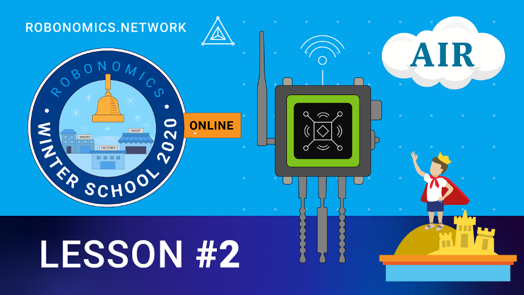

|
Урок #2: Web3 в помощь жильцам многоквартирного дома

В данном уроке с помощью децентрализованного приложения Робономики мы попробуем себя в роли жителя многоквартирного дома, которому доступны несколько сервисов на базе web3 технологий. И, тем самым, на примере, близком каждому, закрепим понимание человеко-машинной коммуникации с использованием web3 технологий.
Для начала посмотрите теоретический урок [Теория] Урок 2.1: Web3 и Умный дом, применение IPFS. Обратите внимание, что видео имеет продолжительность 25 минут, так что лучше посмотреть его в спокойном месте и в спокойное время, когда у вас будет час свободного времени, а не 10 минут на бегу. |